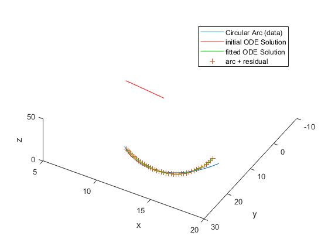
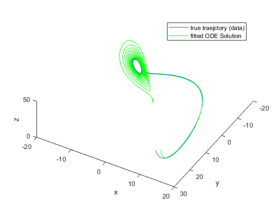

Contents
Demonstration
Lorenz system
sigma = 10; beta = 8/3; rho = 28; xt0 = [10,20,10]; % Runge-Kutta 4th/5th order ODE solver [~,a] = ode45(@(t,y)Lorenz(t,y,sigma,beta,rho),[0 100],xt0); figure plot3(a(:,1),a(:,2),a(:,3)) xlabel('x') ylabel('y') zlabel('z') view([-9.0 -1.0]) clear a
Fit a circular arc to a short trajectory
lsqcurvefit minimizes the differences between the trajectory and the circular arc.
[tspan,trajectory] = ode45(@(t,y)Lorenz(t,y,sigma,beta,rho),[0 1/10],xt0); lb = [-pi/2,-pi,5,-15,-pi,-40,-40,-40]; ub = [pi/2,pi,60,15,pi,40,40,40]; theta0 = [0;0]; R0 = 20; V0 = 1; t0 = 0; delta0 = zeros(3,1); % Parameters to tune p0 = [theta0;R0;V0;t0;delta0]; [pBest,resnorm,residual] = ... lsqcurvefit(@Circle,p0,tspan,trajectory,lb,ub); figure hold on initial_arc = Circle(p0, tspan); fitted_arc = Circle(pBest, tspan); plot3(trajectory(:,1),trajectory(:,2),trajectory(:,3)) plot3(initial_arc(:,1),initial_arc(:,2),initial_arc(:,3),'r') plot3(fitted_arc(:,1),fitted_arc(:,2),fitted_arc(:,3),'g') xlabel('x') ylabel('y') zlabel('z') legend('ODE Solution (data)','Initial circular arc','fitted circular arc') view([-30 -70]) hold off
Local minimum possible. lsqcurvefit stopped because the final change in the sum of squares relative to its initial value is less than the default value of the function tolerance.

Fit the ODE to the Circular Arc
Allow the initial point to change as well (see notion of deterministic chaos). To do so, write the function file Lorenz2 that takes the parameters and initial conditions of the ODE fit and calculates the trajectory over the times t.
p0 = zeros(1,6); p0(1) = sigma; p0(2) = beta; p0(3) = rho; % The new target is arc: arc = fitted_arc; p0(4:6) = arc(1,:); options = optimoptions('lsqcurvefit','FunctionTolerance',1e-10); [pBest,presnorm,presidual,exitflag,output] = ... lsqcurvefit(@Lorenz2,p0,tspan, arc,[],[],options); fprintf('Old parameters: %f, %f, %f %f, %f, %f\n', p0) fprintf('New parameters: %f, %f, %f %f, %f, %f\n', pBest) [~,initial_ode]=ode45(@(t,y)Lorenz(t,y,sigma,beta,rho),[0 1/10],p0(4:6)); [~,fitted_ode]=ode45(@(t,y)Lorenz(t,y,pBest(1),pBest(2),pBest(3)),[0 1/10],pBest(4:6)); figure hold on plot3(arc(:,1),arc(:,2),arc(:,3)) plot3(initial_ode(:,1),initial_ode(:,2),initial_ode(:,3),'r') plot3(fitted_ode(:,1),fitted_ode(:,2),fitted_ode(:,3),'g') xlabel('x') ylabel('y') zlabel('z') arc_plus_residual = arc + presidual; plot3(arc_plus_residual(:,1),arc_plus_residual(:,2),arc_plus_residual(:,3),'+') legend('Circular Arc (data)', 'initial ODE Solution', 'fitted ODE Solution', 'arc + residual') view([-30 -70]) hold off
Local minimum found. Optimization completed because the size of the gradient is less than the default value of the optimality tolerance. Old parameters: 10.000000, 2.666667, 28.000000 10.231243, 18.979799, 8.641427 New parameters: 9.132441, 2.854977, 27.937979 10.610030, 19.920598, 9.916707
The optimizer can have trouble due to the inherent error in numerical ODE solutions. If you suspect that your solution is not ideal, perhaps because the exit message or exit flag indicates a potential inaccuracy, then try changing lsqcurvefit options. E.g., Set larger finite difference step size and central finite differences.
options = optimoptions('lsqcurvefit','FiniteDifferenceStepSize',1e-4,... 'FiniteDifferenceType','central');
Weird initial parameters
to fit the ode to the arc using initial conditions completely different than those true
p0 = zeros(1,6); p0(1) = 5; p0(2) = 0.1; p0(3) = 10; p0(4:6) = [10 1 11]; % The target is still arc. % Set `FunctionTolerance` option options = optimoptions('lsqcurvefit','FunctionTolerance',1e-10); [pBest,presnorm,presidual,exitflag,output] = ... lsqcurvefit(@Lorenz2,p0,tspan, arc,[],[],options); fprintf('Old parameters: %f, %f, %f %f, %f, %f\n', p0) fprintf('New parameters: %f, %f, %f %f, %f, %f\n', pBest) [~,initial_ode]=ode45(@(t,y)Lorenz(t,y,5,0.1,10),[0 1/10],p0(4:6)); [~,fitted_ode]=ode45(@(t,y)Lorenz(t,y,pBest(1),pBest(2),pBest(3)),[0 1/10],pBest(4:6)); figure hold on plot3(arc(:,1),arc(:,2),arc(:,3)) plot3(initial_ode(:,1),initial_ode(:,2),initial_ode(:,3),'r') plot3(fitted_ode(:,1),fitted_ode(:,2),fitted_ode(:,3),'g') xlabel('x') ylabel('y') zlabel('z') arc_plus_residual = arc + presidual; plot3(arc_plus_residual(:,1),arc_plus_residual(:,2),arc_plus_residual(:,3),'+') legend('Circular Arc (data)', 'initial ODE Solution', 'fitted ODE Solution', 'arc + residual') view([-30 -70]) hold off
Local minimum found. Optimization completed because the size of the gradient is less than the default value of the optimality tolerance. Old parameters: 5.000000, 0.100000, 10.000000 10.000000, 1.000000, 11.000000 New parameters: 9.132441, 2.854977, 27.937979 10.610030, 19.920598, 9.916707
Fit a long trajectory
Weird initial parameters and long trajectory
Consider a long true trajectory simulated with certain parameters and add some noise. It is possible to recover the true parameters?
[t,true_trajectory]=ode45(@(t,y)Lorenz(t,y, sigma, beta, rho),[0 2], xt0);
figure
h = plot(t, true_trajectory);
set(h, {'color'}, {'red';'green';'blue'});
hold on
noise = normrnd(0,3,size(true_trajectory));
data = true_trajectory + noise;
h = plot(t, data, '.');
set(h, {'color'}, {'red';'green';'blue'});
legend('true x','true y','true z', 'data x','data y', 'data z')
xlabel('time')
p0 = zeros(1,6);
p0(1) = 1;
p0(2) = 1;
p0(3) = 3;
p0(4:6) = p0(4:6);
% The target is data.
% Now optimisation will take much more time.
options = optimoptions('lsqcurvefit','FunctionTolerance',1e-10);
[pBest,presnorm,presidual,exitflag,output] = ...
lsqcurvefit(@Lorenz2,p0,t, data,[],[],options);
fprintf('Old parameters: %f, %f, %f %f, %f, %f\n', p0)
fprintf('New parameters: %f, %f, %f %f, %f, %f\n', pBest)
[~,fitted_ode]=ode45(@(t,y)Lorenz(t,y,pBest(1),pBest(2),pBest(3)),[0 2],pBest(4:6));
[~,initial_ode]=ode45(@(t,y)Lorenz(t,y,p0(1),p0(2),p0(3)),[0 2],p0(4:6));
figure
hold on
plot3(true_trajectory(:,1),true_trajectory(:,2),true_trajectory(:,3))
plot3(initial_ode(:,1),initial_ode(:,2),initial_ode(:,3),'+')
plot3(fitted_ode(:,1),fitted_ode(:,2),fitted_ode(:,3),'g')
xlabel('x')
ylabel('y')
zlabel('z')
legend('true traejctory (data)', 'initial ODE Solution', 'fitted ODE Solution')
view([-30 -70])
hold off
Local minimum possible. lsqcurvefit stopped because the final change in the sum of squares relative to its initial value is less than the selected value of the function tolerance. Old parameters: 1.000000, 1.000000, 3.000000 0.000000, 0.000000, 0.000000 New parameters: 10.246746, 2.633162, 28.032059 11.005244, 18.748920, 9.565023
Deterministic chaos
Even if the fit work for a short time interval (and this is not trivial at all) there is no guarantee that it will work for making prediction far in the future.
[~,fitted_ode]=ode45(@(t,y)Lorenz(t,y,pBest(1),pBest(2),pBest(3)),[0 10],pBest(4:6)); [~,initial_ode]=ode45(@(t,y)Lorenz(t,y,p0(1),p0(2),p0(3)),[0 10],p0(4:6)); figure hold on plot3(true_trajectory(:,1),true_trajectory(:,2),true_trajectory(:,3)) plot3(fitted_ode(:,1),fitted_ode(:,2),fitted_ode(:,3),'g') xlabel('x') ylabel('y') zlabel('z') legend('true traejctory (data)', 'fitted ODE Solution') view([-30 -70]) hold off